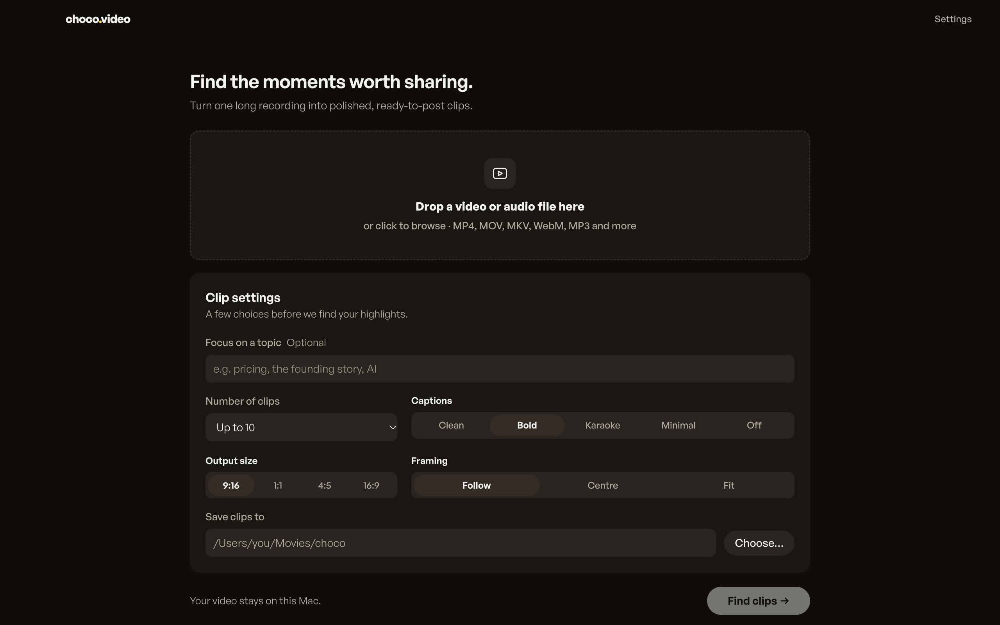
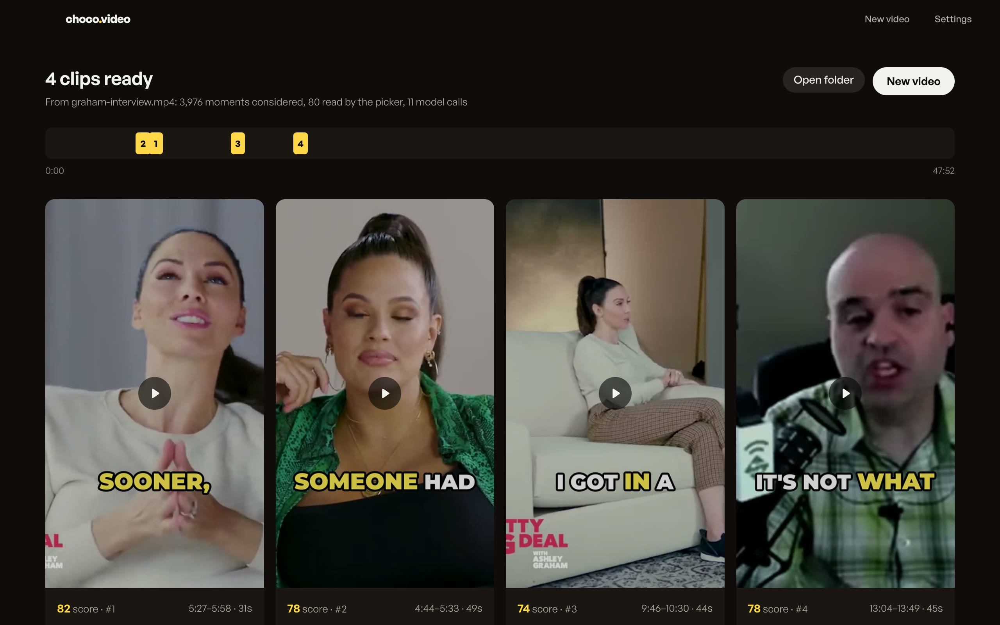

choco.video
Long videos in. Clips out.



Drop in a long episode.
It listens and picks, on your Mac.Transcription at 42× real time. Nothing uploaded.
podcast-ep-47.mp4 47:52
82
78
78
82
Four clips, framed on the speaker and captioned.Each with its score and the reasons it was picked.
Your video stays
on your Mac.
on your Mac.
20 MB.No account. No subscription. No credits.
Free and
open source.
open source.
choco.video
Long videos in. Clips out. On your Mac.
Download for macOS